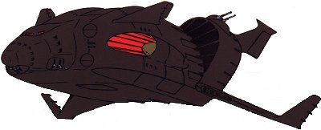

| Zanzibar Zeon Space Force Mobile Cruiser |
|
|  | |
General and Technical Data |
|
|
Unit type: all-evironment mobile cruiser Operator: Zeon Duchy Dimensions: overall length 255 meters; overall width 221.8 meters; overall height 70.5 meters Construction: high tensile steel Propulsion: 4 x rocket engine; external large booster Hangar capacity: 2x infantry, 6x mobile suits Launch catapults: 0 Fixed armaments: 2-barrel mega particle cannon turret; 4 x mega particle cannon turret; 5 x 2-barrel 120mm antiaircraft machinegun MA carrying Zanzibar "Kai"  RPG quick stats sheet RPG quick stats sheet
Armor Rating: 3.3 Speed Rating: .8 space, 1.8 air Maneuverability Rating: 1.8 space, .8 air Sensors Rating: 2.5 MPC Power Rating: 2.9
Zanzibar II Refit RPG quick stats sheet
Armor Rating: 3.4 Speed Rating: .8 space, 1.9 air Maneuverability Rating: 1.8 space, .9 air Sensors Rating: 2.6 MPC Power Rating: 3 |
| Technical and Historical Notes | |
|
The Zanzibar-class mobile cruiser is a unique ship in the Zeon navy, and operates in a similar matter to the Pegasus-class warship of the Federation. It is equipped with an atmospherically sound hull design and is capable of re-entry from space without problem. The Zanzibar carries a substantial mobile suit complement, and is also often used to transfer resources, raw materials, and such out of areas where using an HLV may be dangerous or too slow.
The Zanzibar is also an accomplished warship in its own, mounting several Mega Particle Cannons, large anti-fortress missiles, and antiaircraft guns. Its firepower is also roughly equal to the Pegasus-class as well. However, it lacks a Minovski-craft compressor, which requires it to use sustained thrust to operate in gravity. This limits its sortie time when compared to the Gaw Assault Carrier, so it isn't quite as effective as an airborne weapons platform. Its only other drawback is that it must make use of a disposable booster to return to orbit; thusly it is only capable of launch from a fully-established spaceport. Taking the new class of Musai's heed, a newer Zanzibar is in development. This model is armed with heavier Mega Particle Cannons, more antiaircraft guns, and concealed launch catapults to speed the deployment of its mobile suits, as well as larger wings and greater atmospheric maneuvering surfaces to make better use of fuel consumption and extend its maximum effective combat range while in gravity. Concurrently with the development of new Mobile Armor weapons by the Zeon Mobile Assault Force, a second new model Zanzibar-class was released. Its armament is the same as the original, but its hangar has been resized to allow storage of a mobile armor. It is only capable of holding two normal mobile suits in this configuration, but the mobile armor's added firepower more than makes up for the disparity. |
|